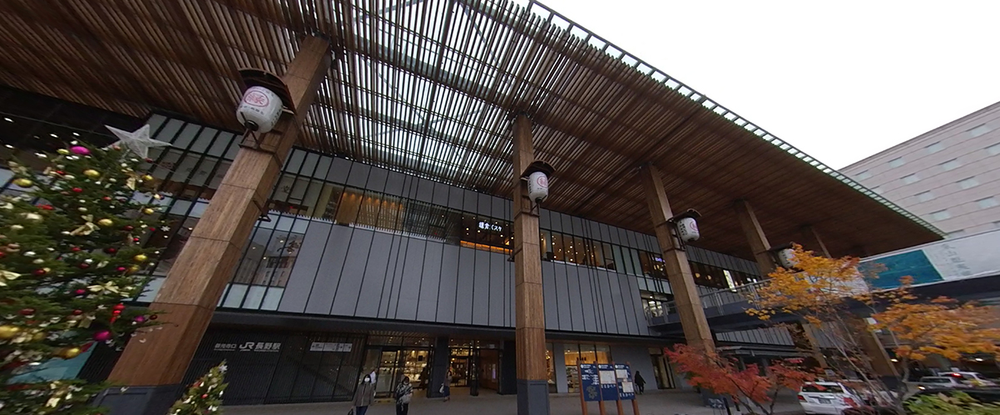
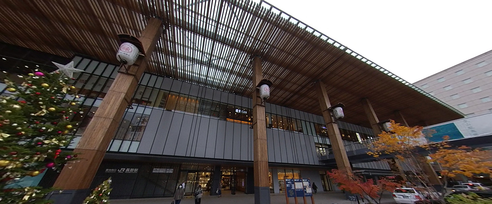

←スマホからご覧になる場合はこちらから
長野駅（ながのえき）は、長野県長野市大字栗田および南千歳一丁目にある
東日本旅客鉄道（JR東日本）・しなの鉄道・長野電鉄の駅である。
長野県の県庁所在地・長野市の中心駅で、県内最大規模のターミナル駅となっている。
北陸新幹線はあさまの始終点となっている他、かがやき、はくたかの全列車が停車する。
2015年の北陸新幹線金沢延伸により、新駅ビルと一体的に建設された5代目駅舎に建て替えられた。
冬場になるとウィンタースポーツを目的に観光客が国内外から訪れる。
決して都会的な雰囲気ではないが、落ち着いていて生活しやすくまとまっている駅である。
また、善光寺口と東口の栄え方の差が激しく、間違えて東口に出てもすぐわかるのも田舎らしい。